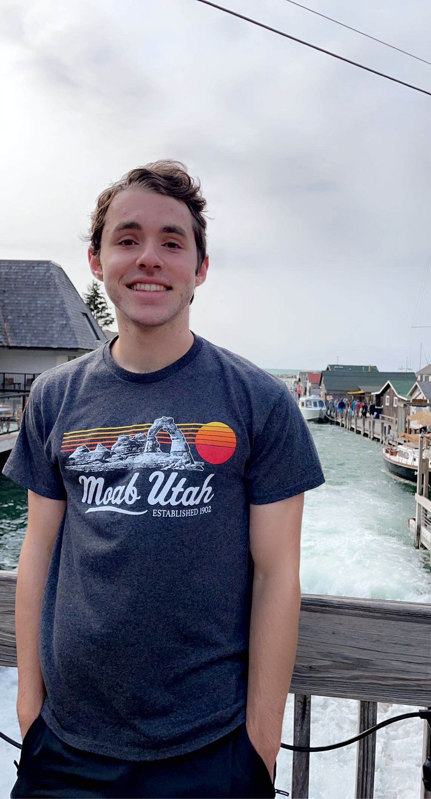

Your daily source for aquatic news

Hi, my name is Ryan Conley and I am from Grayslake, Illinois. I am an undergraduate student attending Michigan State University. I am currently pursuing a degree in computer science and hope that one day I can apply it to other fields that I am interested in such as marine biology. I am an adventerous person and love to explore different wildlife that the world has to offer.
Marine creatures are by far my favorite to study because I believe they are more difficult to find than species on land. It can sometimes be difficult to find exotic aquatic life in the midwest, but I love to snorkel and try to do so whenever I am near the ocean. Some of the places where I have snorkeled so far have been:
I look forward to exploring more of our world's oceans and sharing what I find here. I will also try to post about interesting facts and articles when I come across them. Thanks for reading and good luck in your future explorations!